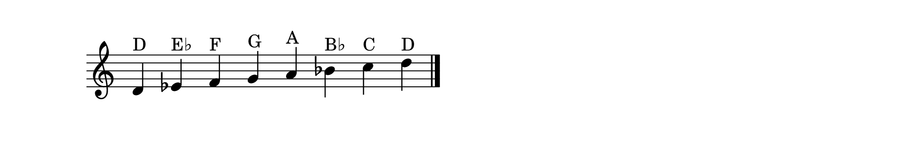

A Different Musical Language
Everything you have learned in this course so far,scales, chords, progressions, improvisation,belongs to the Western musical tradition. It is a rich and beautiful tradition, but it is not the only one. In this final lesson, we step into a world of music that is thousands of years old, shaped by poetry, philosophy, and an entirely different understanding of melody: Persian classical music.
Persian music does not think in chords. It thinks in melody,single, elaborately ornamented lines that rise and fall with the emotional arc of a poem. Where Western music builds harmony by stacking notes vertically, Persian music builds expression by moving horizontally, stretching and decorating each note with ornaments that give the music its distinctive, deeply emotional character.
The Dastgah System
Where Western music has major and minor keys, Persian music has the dastgah system. A dastgah is a melodic framework,a collection of notes, characteristic phrases, and rules for how the melody should move. There are twelve principal dastgah-ha, each with its own mood and personality.
The most commonly taught starting point is Shur, which is the emotional foundation of much Persian music. Shur is often described as expressing sorrow, longing, and introspection,though like all great musical systems, it is far richer than any single word can capture.
If you play the notes: D–E♭–F–G–A–B♭–C–D on the piano, you will hear something close to Shur. But the dastgah is more than its notes,it is also about how you move through them, which notes you linger on, which ones you ornament, and where you come to rest.

Microtones & the Limitations of the Piano
Here is something important to understand: Persian music uses intervals smaller than a half step, called microtones (specifically, quarter tones). The piano, with its fixed tuning, cannot produce these intervals. A note that should sit between E♭ and E♮ simply does not exist on the keyboard.
This means the piano offers an approximation of Persian music, not the full experience. The great Persian piano masters,artists in the lineage of Javad Maroufi and Morteza Mahjoubi,developed techniques to suggest microtonal inflections through ornaments, grace notes, and careful use of dynamics. The piano cannot bend a pitch, but it can imply one.
Ornamentation: The Soul of Persian Music
In Western music, ornaments are decorations. In Persian music, they are the substance. A melody played without ornamentation sounds bare and lifeless, like reciting a poem in a monotone.
The most common ornaments include tekiyeh (a grace note that leans into the main note), morakkab (a rapid alternation between two adjacent notes), and riz (a tremolo-like repetition). On the piano, these are achieved through quick grace notes, trills, and carefully timed accents.
Try It: A Simple Shur Phrase
Play slowly: D–E♭–F–E♭–D. Let each note breathe. Now add a quick grace note before the E♭ (tap D very quickly before landing on E♭). That subtle lean is the beginning of Persian ornamentation.
Maqam: The Broader Family
The Persian dastgah system is part of a larger family of modal systems found across the Middle East, North Africa, and Central Asia, broadly called maqam. Turkish, Arabic, and Azerbaijani music all use related systems with different names and slightly different rules, but the underlying philosophy is shared: melody as the primary vehicle of expression, with microtonal inflections and ornamental elaboration.
Understanding dastgah gives you a window into this entire world of music. The principles you learn here,modal thinking, ornamentation, melodic development without chords,will resonate across many traditions.
Where to Go from Here
This lesson is just an introduction, a first glimpse into a vast and ancient tradition. To go deeper, seek out recordings of the masters: Javad Maroufi, Morteza Mahjoubi, Faramarz Payvar, and Hossein Alizadeh. Listen to how they ornament, how they build tension and release through a single melodic line, how they make the piano sing in a language it was not designed for.
And if this music moves you the way it has moved me, know that it is one of the great privileges of the piano that it can speak, however imperfectly, in so many musical languages.
The piano was built for Western music. But it dreams in every language. All you have to do is listen.